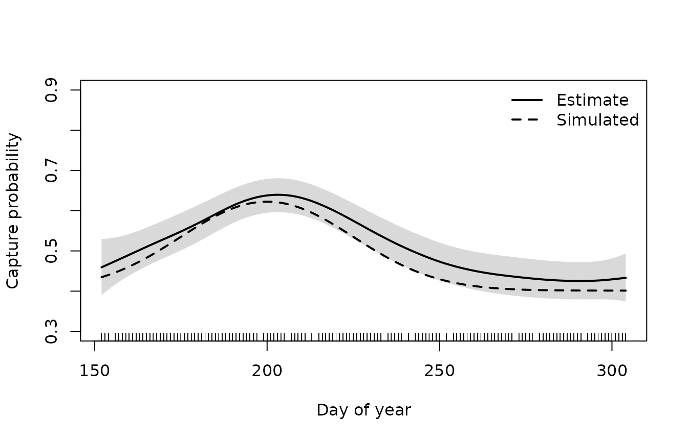
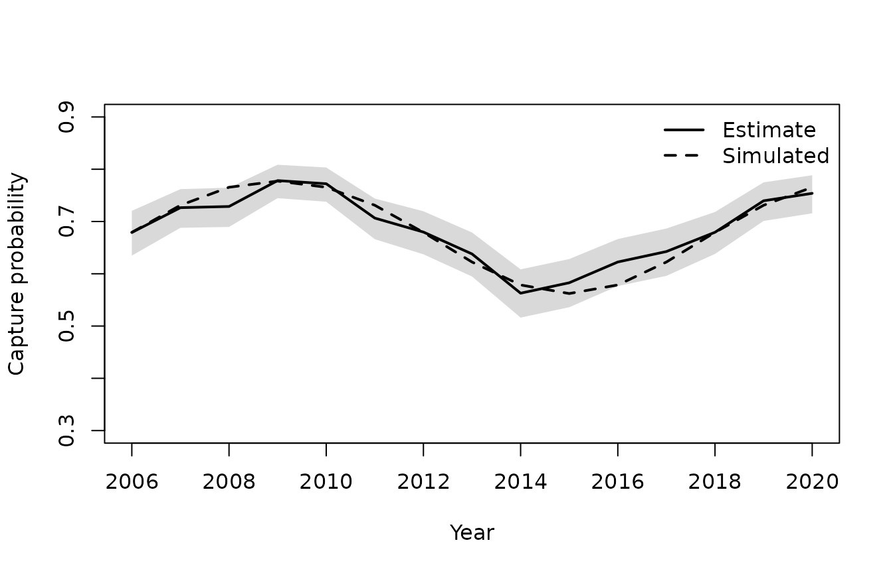
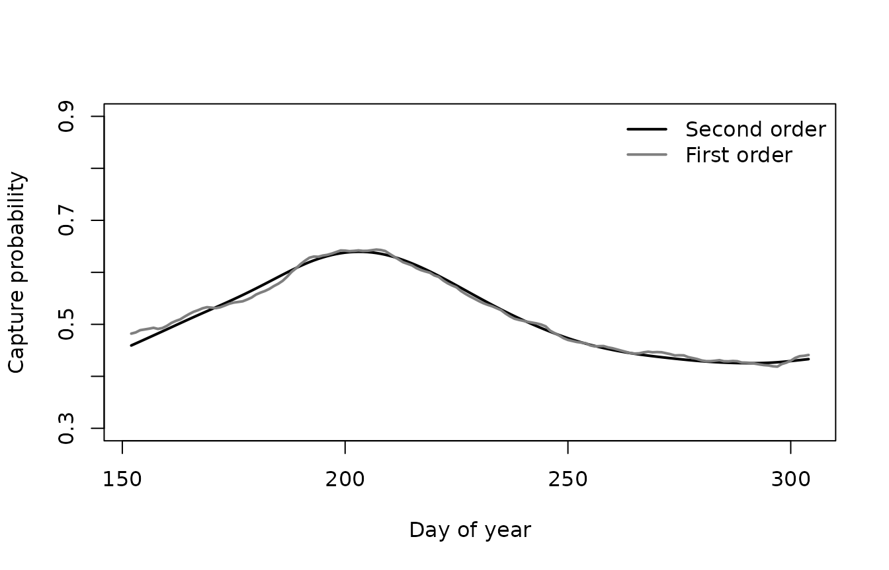

Smooth terms for year and day of the year
Source:vignettes/articles/smooth-terms.Rmd
smooth-terms.RmdThis worked example adds smooth effects of year and day of the year to a model with visit and sample random effects. It shows how to set up random walk smooths, how to choose between models, and how to plot the estimated effects.
The data
The data are simulated, as described in Simulating electrofishing data, and are the same as in Visit and sample random effects. Capture probability was simulated with smooth, non-linear effects of year and of day of the year.
Code to simulate the data
set.seed(2024)
nsite <- 30
years <- 2006:2020
# one visit to each site in each year
visits <- expand.grid(siteID = paste0("Site", 1:nsite), year = years)
visits$siteID <- factor(visits$siteID, levels = paste0("Site", 1:nsite))
nvisit <- nrow(visits)
visits$visitID <- factor(paste(visits$siteID, visits$year))
# sites are fished between June and October
visits$doy <- sample(152:304, nvisit, replace = TRUE)
# the area fished (m^2) is a property of the site
visits$area <- round(runif(nsite, 80, 250))[visits$siteID]
# smooth effects on logit capture probability
f_year <- function(year) 0.5 * sin(2 * pi * (year - 2006) / 12)
f_doy <- function(doy) 0.9 * exp(-((doy - 200) / 35)^2) - 0.45
# two samples per visit: fry and parr
samples <- merge(visits, data.frame(lifestage = c("Fry", "Parr")))
samples <- samples[order(samples$visitID, samples$lifestage), ]
samples$lifestage <- factor(samples$lifestage)
samples$sampleID <- factor(paste(samples$visitID, samples$lifestage))
nsample <- nrow(samples)
# random effects on logit capture probability
sigma_visit <- 0.4
sigma_sample <- 0.3
visit_effect <- rnorm(nvisit, 0, sigma_visit)
names(visit_effect) <- levels(visits$visitID)
samples$visit_effect <- visit_effect[as.character(samples$visitID)]
samples$sample_effect <- rnorm(nsample, 0, sigma_sample)
# the number of fish in the area fished
density <- c(Fry = 0.8, Parr = 0.4) # fish per m^2
site_effect <- rnorm(nsite, 0, 0.5)
samples$N <-
rpois(
nsample,
density[as.character(samples$lifestage)] * samples$area *
exp(site_effect[samples$siteID])
)
# three passes per sample
ef_sim <- merge(samples, data.frame(pass = 1:3))
ef_sim <- ef_sim[order(ef_sim$sampleID, ef_sim$pass), ]
rownames(ef_sim) <- NULL
# capture probability is lower after the first pass, and higher for parr
ef_sim$pass12 <- factor(pmin(ef_sim$pass, 2))
ef_sim$eta <-
0.3 +
0.5 * (ef_sim$lifestage == "Parr") -
0.4 * (ef_sim$pass12 == "2") +
f_year(ef_sim$year) +
f_doy(ef_sim$doy) +
ef_sim$visit_effect +
ef_sim$sample_effect
ef_sim$p <- 1 / (1 + exp(-ef_sim$eta))
# remove fish pass by pass
ef_sim$count <- NA
remaining <- samples$N
names(remaining) <- samples$sampleID
for (i in 1:3) {
ipass <- which(ef_sim$pass == i)
id <- as.character(ef_sim$sampleID[ipass])
ef_sim$count[ipass] <- rbinom(length(ipass), remaining[id], ef_sim$p[ipass])
remaining[id] <- remaining[id] - ef_sim$count[ipass]
}Random walk smooths
The recommended smooths are first and second order random walks. A first order random walk penalises the differences between neighbouring levels, and shrinks towards a constant. A second order random walk penalises the second differences, so it gives smoother curves, and shrinks towards a linear trend. The amount of smoothing is estimated, as the standard deviation of the steps of the walk.
A random walk needs two things. The first is a factor in which every step of the walk is a level, including any steps with no data. Sites were fished on most, but not all, days between June and October, so the factor for day of the year has a level for every day in that period.
levels(ef_sim$fyear)
#> [1] "2006" "2007" "2008" "2009" "2010" "2011" "2012" "2013" "2014" "2015"
#> [11] "2016" "2017" "2018" "2019" "2020"
range(days)
#> [1] 152 304
nlevels(ef_sim$fdoy)
#> [1] 153The second is a penalty matrix for those levels, from
rw_penalty().
rw1_year <- rw_penalty(years, order = 1)
rw2_year <- rw_penalty(years, order = 2)
rw1_doy <- rw_penalty(days, order = 1)
rw2_doy <- rw_penalty(days, order = 2)The smooth is then added to the formula using the Markov random field
basis from mgcv, bs = "mrf", with the penalty
passed through xt. The basis and the penalty are sparse, so
these models are quick to fit.
Fitting the models
All the models have fixed effects for lifestage and pass, and visit and sample random effects. To compare the smooths with linear trends, the covariates are centred and scaled first: the optimiser works best when covariates are on a similar scale.
ef_sim$year_s <- (ef_sim$year - mean(ef_sim$year)) / sd(ef_sim$year)
ef_sim$doy_s <- (ef_sim$doy - mean(ef_sim$doy)) / sd(ef_sim$doy)First the effect of year: no effect, a linear trend, and first and second order random walks.
m_base <-
efp(count ~ lifestage + pass12 +
s(visitID, bs = "re") + s(sampleID, bs = "re"),
data = ef_sim, pass = pass, id = sampleID)
m_year_linear <-
efp(count ~ lifestage + pass12 + year_s +
s(visitID, bs = "re") + s(sampleID, bs = "re"),
data = ef_sim, pass = pass, id = sampleID)
m_year_rw1 <-
efp(count ~ lifestage + pass12 +
s(fyear, bs = "mrf", xt = list(penalty = rw1_year)) +
s(visitID, bs = "re") + s(sampleID, bs = "re"),
data = ef_sim, pass = pass, id = sampleID)
m_year_rw2 <-
efp(count ~ lifestage + pass12 +
s(fyear, bs = "mrf", xt = list(penalty = rw2_year)) +
s(visitID, bs = "re") + s(sampleID, bs = "re"),
data = ef_sim, pass = pass, id = sampleID)
aic <- AIC(m_base, m_year_linear, m_year_rw1, m_year_rw2)
aic$delta <- aic$AIC - min(aic$AIC)
aic
#> df AIC delta
#> m_base 5 128534.3 85.831490
#> m_year_linear 6 128529.9 81.500629
#> m_year_rw1 6 128448.4 0.000000
#> m_year_rw2 7 128451.5 3.014801A linear trend in year is hardly any better than no effect of year, but both random walks improve the model a great deal: the effect of year is strong, and it is not linear. There is little to choose between the two random walks, and the first order walk is used from here on.
Next the effect of day of the year is added to that model, again as a linear trend and as first and second order random walks.
m_doy_linear <-
efp(count ~ lifestage + pass12 + doy_s +
s(fyear, bs = "mrf", xt = list(penalty = rw1_year)) +
s(visitID, bs = "re") + s(sampleID, bs = "re"),
data = ef_sim, pass = pass, id = sampleID)
m_doy_rw1 <-
efp(count ~ lifestage + pass12 +
s(fyear, bs = "mrf", xt = list(penalty = rw1_year)) +
s(fdoy, bs = "mrf", xt = list(penalty = rw1_doy)) +
s(visitID, bs = "re") + s(sampleID, bs = "re"),
data = ef_sim, pass = pass, id = sampleID)
m_doy_rw2 <-
efp(count ~ lifestage + pass12 +
s(fyear, bs = "mrf", xt = list(penalty = rw1_year)) +
s(fdoy, bs = "mrf", xt = list(penalty = rw2_doy)) +
s(visitID, bs = "re") + s(sampleID, bs = "re"),
data = ef_sim, pass = pass, id = sampleID)
aic <- AIC(m_year_rw1, m_doy_linear, m_doy_rw1, m_doy_rw2)
aic$delta <- aic$AIC - min(aic$AIC)
aic
#> df AIC delta
#> m_year_rw1 6 128448.4 145.993541
#> m_doy_linear 7 128382.9 80.476771
#> m_doy_rw1 7 128304.9 2.402008
#> m_doy_rw2 8 128302.4 0.000000Day of the year matters too, and a smooth effect is much better than a linear one. The second order random walk has the lowest AIC, and this is the final model.
m_final <- m_doy_rw2
m_final
#>
#> Call:
#> efp(formula = count ~ lifestage + pass12 + s(fyear, bs = "mrf",
#> xt = list(penalty = rw1_year)) + s(fdoy, bs = "mrf", xt = list(penalty = rw2_doy)) +
#> s(visitID, bs = "re") + s(sampleID, bs = "re"), data = ef_sim,
#> pass = pass, id = sampleID)
#>
#> Formula:
#> count ~ lifestage + pass12 + s(fyear, bs = "mrf", xt = list(penalty = rw1_year)) +
#> s(fdoy, bs = "mrf", xt = list(penalty = rw2_doy)) + s(visitID,
#> bs = "re") + s(sampleID, bs = "re")
#>
#> Random effects:
#> Estimate Std. Error
#> sigma s(fyear) 0.228265 0.050164
#> sigma s(fdoy) 0.003158 0.001056
#> sigma s(visitID) 0.348431 0.023263
#> sigma s(sampleID) 0.258187 0.022093
#>
#> Coefficients:
#> Estimate Std. Error z value Pr(>|z^2|)
#> (Intercept) 1.1907 0.79614 1.496 1.348e-01
#> lifestageParr 0.4756 0.02926 16.255 2.049e-59
#> pass122 -0.3486 0.01952 -17.858 2.520e-71
#> s(fdoy).null1 8.4172 6.30063 1.336 1.816e-01
#>
#> Degrees of Freedom: 2700 Total (i.e. Null); 2692 Residual
#> AIC: 128300A second order random walk has a fixed effect for its linear trend,
here s(fdoy).null1, which is on an arbitrary scale. The
starting value of each walk is also a fixed effect, so the intercept is
for the first year and the first day rather than for an average year and
day.
Checking the estimates
The data were simulated, so the estimates can be compared with the truth. The standard deviations between visits and between samples were 0.4 and 0.3.
round(m_final$sigma, 3)
#> s(fyear) s(fdoy) s(visitID) s(sampleID)
#> 0.228 0.003 0.348 0.258In the model with no effects of year or day of the year the standard deviation between visits was much too large, because the visit random effects were absorbing those effects (see Visit and sample random effects). Now that they are in the model it is much closer to the simulated value, and both standard deviations are within about two standard errors of the values used in the simulation.
round(c(base = m_base$sigma[["s(visitID)"]], final = m_final$sigma[["s(visitID)"]]), 3)
#> base final
#> 0.564 0.348The effects of lifestage and pass were simulated as 0.5 and -0.4.
round(cbind(estimate = coef(m_final), se = sqrt(diag(vcov(m_final))))[2:3, ], 3)
#> estimate se
#> lifestageParr 0.476 0.029
#> pass122 -0.349 0.020The lifestage effect is recovered well. The pass effect is smaller in size than the simulated value, by about two and a half standard errors. This is a feature of this particular simulated dataset rather than of the method: when the simulation was repeated with six other random seeds, the estimates of the pass effect were between -0.41 and -0.375.
Plotting the effects
The effect of a smooth is plotted by predicting over its levels, with
the other covariates held fixed and the random effects left out using
exclude. This small function plots a prediction with an
approximate 95% confidence interval, and adds the simulated effect as a
dashed line.
plot_effect <- function(x, pred, truth, xlab) {
lower <- invlogit(pred$fit - 2 * pred$se.fit)
upper <- invlogit(pred$fit + 2 * pred$se.fit)
plot(x, invlogit(pred$fit), type = "n", ylim = c(0.3, 0.9),
xlab = xlab, ylab = "Capture probability")
polygon(c(x, rev(x)), c(lower, rev(upper)), col = "grey85", border = NA)
lines(x, invlogit(pred$fit), lwd = 2)
lines(x, invlogit(truth), lty = 2, lwd = 2)
}
random_effects <- c("s(visitID)", "s(sampleID)")The effect of day of the year, for fry on the first pass in 2013:
newdata <-
data.frame(
lifestage = "Fry", pass12 = "1",
fyear = factor(2013, levels = years),
fdoy = factor(days, levels = days)
)
pred <- predict(m_final, newdata = newdata, se.fit = TRUE, exclude = random_effects)
plot_effect(days, pred, truth = 0.3 + f_year(2013) + f_doy(days), xlab = "Day of year")
rug(ef_sim$doy)
legend("topright", c("Estimate", "Simulated"), lty = 1:2, lwd = 2, bty = "n")
The effect of year, for fry on the first pass on day 200:
newdata <-
data.frame(
lifestage = "Fry", pass12 = "1",
fyear = factor(years, levels = years),
fdoy = factor(200, levels = days)
)
pred <- predict(m_final, newdata = newdata, se.fit = TRUE, exclude = random_effects)
plot_effect(years, pred, truth = 0.3 + f_year(years) + f_doy(200), xlab = "Year")
legend("topright", c("Estimate", "Simulated"), lty = 1:2, lwd = 2, bty = "n")
Both smooths follow the simulated effects closely, and the simulated effects are inside the confidence intervals throughout.
First or second order?
The two random walks for day of the year had similar AIC, but they give different curves. With a step for every day, the first order walk is much rougher.
newdata <-
data.frame(
lifestage = "Fry", pass12 = "1",
fyear = factor(2013, levels = years),
fdoy = factor(days, levels = days)
)
pred_rw1 <- predict(m_doy_rw1, newdata = newdata, exclude = random_effects)
pred_rw2 <- predict(m_doy_rw2, newdata = newdata, exclude = random_effects)
plot(days, invlogit(pred_rw2), type = "l", lwd = 2, ylim = c(0.3, 0.9),
xlab = "Day of year", ylab = "Capture probability")
lines(days, invlogit(pred_rw1), col = "grey50", lwd = 2)
legend("topright", c("Second order", "First order"),
col = c("black", "grey50"), lwd = 2, bty = "n")
A second order walk is usually the better choice when the walk has many small steps, as for day of the year. A first order walk is a good choice when there are few steps, as for year.